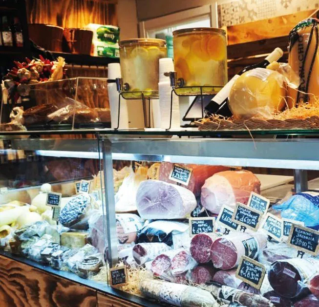
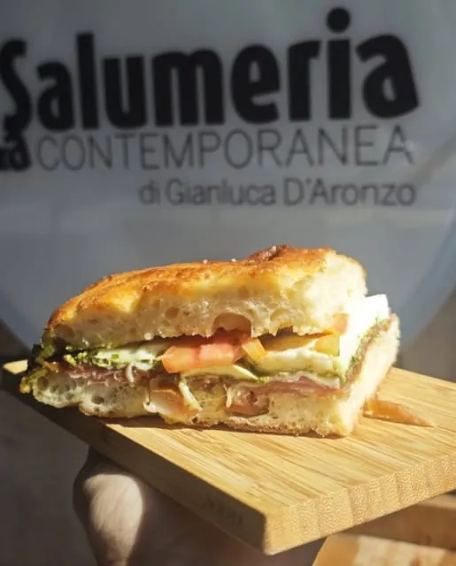
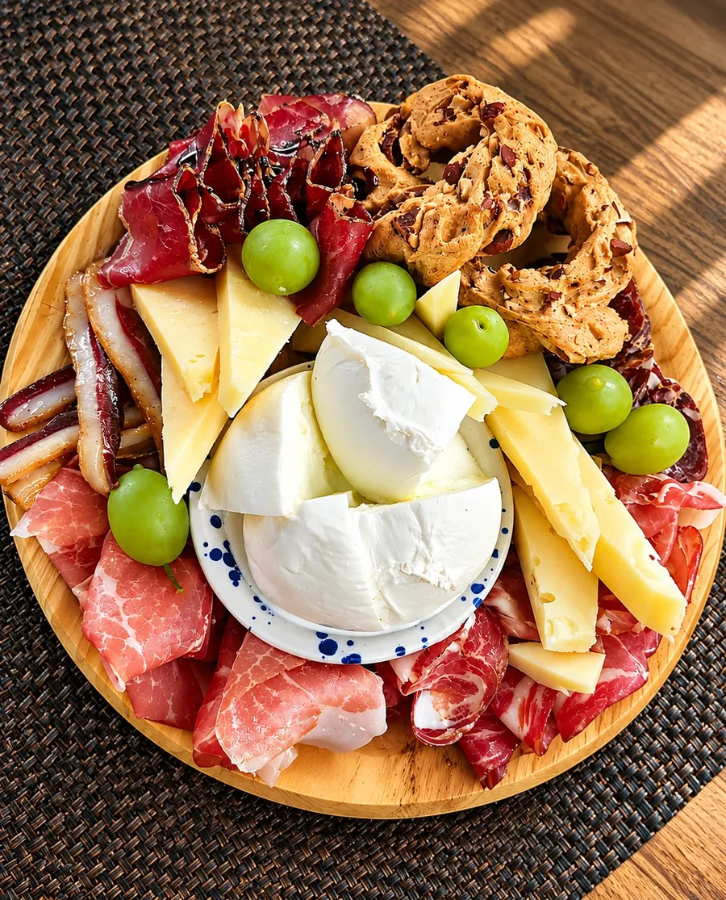
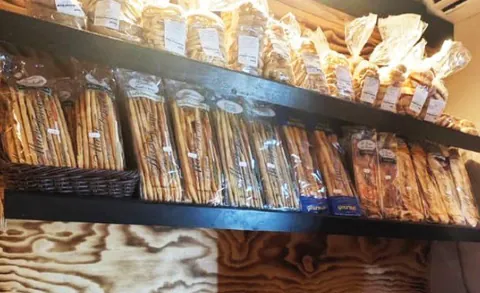

Conserve
Zucchine, peperoni e pomodori secchi sott'olio, sughi pronti e confetture da abbinare ai formaggi.
Viale Mellusi 15, Benevento
Viale Mellusi 15 · Benevento · 333 581 5144

Il banco · Benevento
Dietro al vetro ci sono i salumi da affettare e i formaggi da assaggiare; sugli scaffali, quello che serve per finire la spesa. Ecco cosa trovi in Viale Mellusi, reparto per reparto.

01 · Salumi e formaggi
Capocollo, crudo, bresaola, salame, caciocavallo, provola, gorgonzola: c'è il Sannio e c'è il meglio d'Italia, da piccoli produttori e aziende di nome. E ogni mattina arrivano mozzarella e ricotta fresche.

02 · Gastronomia
Il menù cambia ogni giorno, perché dipende da cosa c'è di buono: un primo, un secondo, i contorni e qualche specialità del territorio, cucinati nel laboratorio dietro al banco.
Se hai poco tempo, c'è una focaccia o un panino farcito con quello che vedi in vetrina. Da mangiare fuori ai tavolini o da portare in ufficio.

03 · Aperitivo e apericena
Salumi selezionati, formaggi ricercati e sfiziosità che si incontrano: il nostro modo di rendere speciale anche il più semplice degli aperitivi. Con un calice scelto dalla nostra cantina.
04 · Prodotti in vendita
Barattoli, pane e bottiglie per completare la spesa, molti fatti da piccoli produttori di Benevento e del Sannio.
Zucchine, peperoni e pomodori secchi sott'olio, sughi pronti e confetture da abbinare ai formaggi.

Di stagione, da produttori a km 0.

Pane, grissini, taralli e biscotti: l'accompagnamento giusto per il tagliere.

Risotti pronti, sali aromatici e specialità in barattolo da regalare (o regalarsi).
05 · Cantina
Fiano, Greco e Aglianico dalla Campania, qualche rosso del resto d'Italia, bollicine e birre artigianali. Chiedi quale va con il tuo tagliere.
La selezione cambia spesso: chiedi al banco cosa c'è di nuovo.